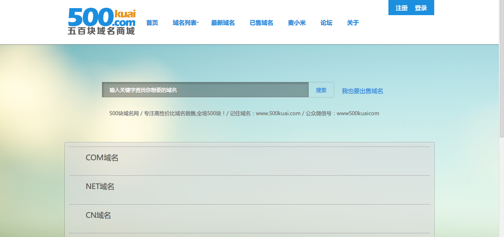

THOMAS CHAN

- (+86) 186-1047-2034
- chenjunhao5818@gmail.com
- github.com/ThomasChan
- zhihu.com/people/ThomasChan
- v2ex.com/member/ThomasChan
- weibo.com/TomasChan
我是陈俊豪，生于九六年春天的山西。在这普通的小山村里过着平凡的生活，老爸算不上知识渊博但总是时不时向我哥和我兄弟俩讲解各种技术细节，可谓上知天文下知地理，得益于此上学的时候成绩拔尖；可也正是因为这样，我对我们这里的教育感到深深的厌恶，并且由于从小对技术比较感兴趣，喜欢钻研、琢磨技术的实现方式，有较强的动手能力，所以在高中二年级毅然决定辍学，之后跟哥哥接触到编程后自学前端技能至现在。 选择前端的原因很简单，可以随时直观的了解作品或项目的状态。我很喜欢做这样的“技术活”，就像做工艺品，很享受精雕细琢的过程。 我对建筑也有很大的兴趣，我希望将来我住的地方由我自己设计甚至建造，对我来说这无疑也是一种乐趣。就像做网页码代码一样，我虽然没学过设计、审美也很差，但我至少知道设计应该根据需求走，就像这个我的个人页面，它就是一份简历，我不会设计不会写的N，但至少我知道我想表达的三个意思：“我是谁”、“我会做什么”、“我做过什么”。
- html
- xhtml
- html5
- css2
- css2.1
- css3
- javascript
- jQuery
- angularJs
- angularFire
- Firebase
- php
- python
- nodejs
- photoshop
- github
- responsive
- sublime text
成为一名合格的前端需要不断的学习，正如这张图所展示的，路漫漫其修远兮，我相信凭借我对技术的热情将会指引我一路走下去。

500块域名商城 主要工作是进行网站的页面重构，以及添加用户系统、域名系统以及后台审核功能，实现注册、登录、用户自主添加、删除域名、站长审核域名等功能。